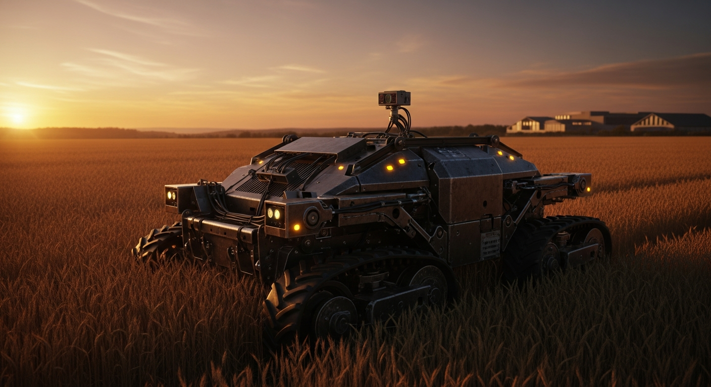

Field-Deployed Robot Fleet
Industrial-grade autonomous units built for Africa's harshest farming conditions

Precision AI Robotics
NVIDIA Jetson-powered computer vision operating at 30fps for real-time field decisions
Curanova robots operate 24 hours a day, 7 days a week — weeding with laser precision, spraying only where needed, harvesting with AI-guided arms. No breaks. No labour disputes. No seasons. Just relentless, precise, field-proven performance.

Industrial-grade autonomous units built for Africa's harshest farming conditions
NVIDIA Jetson-powered computer vision operating at 30fps for real-time field decisions
Our engineering team handles every step. You don't need to rip-and-replace your existing farm infrastructure — Curanova robots integrate with what you already have.
Curanova engineers set up robots on-site. Field mapping, GPS calibration, and connectivity — all handled. Operational within 48 hours of arrival.
Each robot is a rolling data node. Edge AI on NVIDIA Jetson processes 4K imagery at 30fps — weed location, crop health, pest pressure — with zero cloud latency.
The dashboard delivers coverage maps, yield predictions, alert logs, and input savings reports. Your farm runs smarter — with a full audit trail of every action.
Built for red laterite dust, 40°C heat, and unpredictable terrain. Curanova robots are engineered for Africa's real farming environment — not a controlled laboratory.
Millimeter-accurate thermal laser targeting destroys weeds at the root without disturbing surrounding crops, soil biology, or beneficial insects. Eliminates blanket herbicide applications entirely.
Computer vision identifies pests and disease targets in real time. Precision actuators apply micro-doses exactly where needed — reducing herbicide and pesticide use by up to 90%.
Stereo-vision cameras determine fruit ripeness with colour index and brix correlation. Soft-touch robotic arms pick with 98% accuracy, reducing bruising by 60% versus manual harvest.
Solar-battery hybrid systems enable continuous daytime and nighttime field operations. Night operations take advantage of lower pest activity and optimal spray conditions.
Disease outbreaks, irrigation failures, and pest pressure spikes trigger immediate push notifications. Farm managers respond in minutes, not days — preventing losses before they compound.
Monitor telemetry, coverage maps, battery levels, and unit vitals from any device, anywhere in the world. Full audit logs of every action taken across the fleet.

AI-guided arms collect crops with 98% pick accuracy and 60% less bruising
Curanova robots operating continuously can substitute for 3–5 seasonal workers per unit while generating precision data logs of every field action taken.
Schedule a demo and see Curanova robots operating in a real field. Our team handles everything from site survey to handover — you're productive in 48 hours.
Request My Demo →